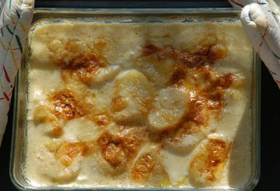

| Zutaten für 4-6 Personen: | |
| 1 kg | Kartoffeln, z.B. Agria, Bintje |
| Salz | |
| Pfeffer aus der Mühle | |
| Muskatnuss | |
| 100 g | Gruyère, rezent |
| 2 | Knoblauchzehen |
| 50 g | Butter |
| 2.5 dl | Milch |
| 5 dl | Rahm |
Dieser Kartoffelgratin ist besser.
Die Kartoffeln schälen und in zwei bis drei Millimeter dicke Scheiben schneiden. In einem sauberen Küchentuch trocknen. Dann mit Salz, Pfeffer und Muskatnuss würzen.
Den Gruyère fein reiben.
Die Knoblauchzehen mit einem grossen Messer quetschen. Eine ofenfeste, eher flache Form damit ausreiben. Mit 10 g Butter einfetten.
Die Kartoffelscheiben in die Form schichten. Den Backofen auf 175°C vorheizen.
In einem Pfännchen die Milch mit 20 g Butter und 75 g Gruyère erhitzen. Über die Kartoffeln giessen. Die Form auf die heisse Herdplatte ziehen und den Gratin bei kleiner Hitze zehn Minuten köcheln. 2.5 dl Rahm dazugiessen, sorgfältig umrühren. Restliche Butter und Gruyère über den Gratin streuen.
In die Mitte des heissen Ofens schieben und rund 50 Minuten backen.
Nach und nach den restlichen Rahm dazugeben. Dabei die Kartoffeln mit einer Fleischgabel an der Oberfläche lockern, damit die Kruste nicht zu hart wird. Bei Ende der Backzeit müssen die Kartoffeln weich sein, die Flüssigkeit fast ganz eingekocht und die Oberfläche goldgelb.
Mit einem Salat serviert, ist der Gratin eine vollständige Mahlzeit für vier Personen; als Beilage zu Fleisch reicht er für sechs Personen.
Über die Dicke der Kartoffelscheiben kann man sich streiten - von hauchdünn bis drei Millimeter. Probieren Sie aus, was Ihnen am besten zusagt.
Sie können anstelle von Rahm auch Doppelrahm verwenden, dann aber das Verhältnis umdrehen (2.5 dl Doppelrahm, 5 dl Milch).
Das Vorgaren auf dem Herd bewirkt, dass Milch und Kartoffelstärke sich verbinden. Wird der kalte Gratin direkt in den heissen Ofen geschoben, kann es passieren, dass die Milch gerinnt.
Wenn Sie nicht sicher sind, ob Ihre Gratinplatte die Hitze auf der Herdplatte erträgt, können Sie auch so vorgehen: In einer weiten Pfanne Milch mit Rahm, 25 g Butter und 75 g Gruyère aufkochen. Kartoffelscheiben beifügen und 15 bis 20 Minuten köcheln. Aufpassen, dass die Kartoffeln nicht anbrennen. Dann in die vorbereitete Gratinform geben.
Wenn Sie die Kartoffelscheiben waschen, so wird ein Teil der Kartoffelstärke ausgeschwemmt. Dann müssen Sie den Guss mit einem Esslöffel Mehl binden.
Der Gratin kann bis zu 90 Minuten gebacken werden. Dann eventuell mit Folie abdecken, damit er nicht austrocknet.
Wählen Sie die richtige Kartoffelsorte, Kochtyp B bis C, Frühkartoffeln sind nicht für Kartoffelgratin geeignet.
Mit Speck und Käse: zusätzlich 200 g Speckwürfeli knusprig braten, entfetten und lagenweise mit Kartoffelscheiben einschichten.
Mit Pilzen: 250 g gemischte Pilze mit gehackten Kräutern braten, lagenweise einschichten. Oder die pasteurisierten Mischpilze aus dem Beutel verwenden; sie müssen nicht gebraten werden.
Mit Äpfeln: zwei Äpfel, zum Beispiel Gala, in Scheiben schneiden und lagenweise einschichten.
Mit Zwiebeln: eine Gemüsezwiebel fein hobeln, glasig dünsten und lagenweise mit den Kartoffelscheiben in die Form schichten. Rahm durch Fleischbouillon ersetzen.
Brückenbauer, Nr 17, 26.4.1995
Getestet von RE im letzten Jahrhundert: war nicht besonders. Eventuell die Zutaten nicht optimal durch 4 geteilt. Ich empfehle stattdessen meinen lieblings-Kartoffelgratin
Note: 3 Sterne am 11.7.2009. War ganz OK aber immer noch kein Vergleich zum lieblings-Gratin. Da ich einen Induktionsherd habe geht das mit Gratinform auf die Herdplatte ziehen nicht. Habe also die Kartoffeln 20 Minuten in der Pfanne gekocht. Bringt nicht viel ausser, dass das Zeug unten anbrennt und einen ziemlichen Putzaufwand verursacht. RE
@LINKBACK_TAG@ @WAKELOCK@